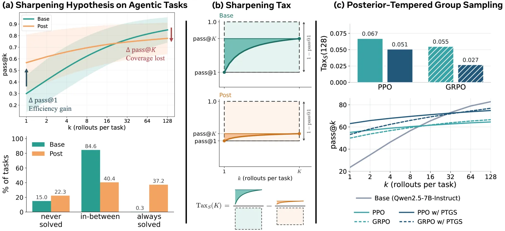
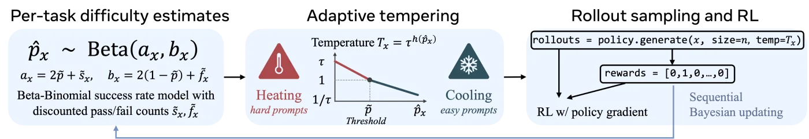

In one line: On three agentic benchmarks and 14 open base/post-trained pairs, post-training trades retry value for pass@1: the Sharpening Tax is positive in 36 of 42 cells, with tasks polarising toward always-solved or never-solved. The base model reaches more tasks at pass@128 in only 26 cells (clearly in 18, mostly larger models), with an authors' harness for the base side and post-trained models run without thinking at one shared temperature. Per-prompt tempered sampling (PTGS) is a promising but not yet demonstrated mitigation: five runs on two grid games, tax reductions within the noise.
Scoped on 26 October 2026. The database Takeaway as fetched said base models with a light harness often beat their post-trained versions at pass@K in "most of 42 cases" and that PTGS pays a smaller tax and raises pass@1; the 19 October correction kept "because post-training pushes tasks" (the paper shows polarisation alongside the tax, an observational link, not a tested cause) and left out the decoding set-up the gap depends on. The Notion property needs the same edit.
How far to trust it: Believe the measurement: the released per-task counts reproduce every Sharpening Tax, coverage and task-category number in the appendix tables, and the 36 of 42 positive taxes hold. Keep the two counts apart: the tax is positive in 36 of 42 cells, while the base model reaches more tasks at pass@128 in 26, clearly (the interval excludes zero) in 18, mostly for the larger models. Treat PTGS as promising, not shown: five runs per arm in two grid-world games on one 7B model, the tax reductions sit inside the run-to-run noise, and a plain fixed temperature of 0.5 paid a smaller tax than PTGS in both games. The evidence, judged.
The idea in one sentence: post-training raises an agent's pass@1 by pushing tasks to always-solved or never-solved, and a task at either extreme gains nothing from another attempt; the Sharpening Tax measures that lost retry value as the difference between base and post-trained models in the calibrated area under their pass@k curves (positive in 36 of 42 cells here), and PTGS tries to pay less of it by sampling the prompts a policy keeps failing hotter during RL.

You need: the pass@1 against pass@k debate about RL and base models (RL for LLMs, section 9); PPO and GRPO (RL for LLMs); sampling temperature (Sampling and Decoding). New terms: coverage (pass@k: at least one of k succeeds); consistency (passk: all k succeed); cell (one base/post-trained pair on one benchmark, 42 in all); crossover k* (the budget where base catches up); raw and calibrated scalability A(K), S(K); Sharpening Tax (base minus post-trained scalability); polarisation (tasks moving to 0 or 128 of 128); PTGS (posterior-tempered group sampling: a per-prompt temperature from a Beta posterior of its success rate).
Reinforcement learning (RL) post-training turns a pre-trained "base" model, which only continues text, into a model that follows instructions, calls tools and reasons. It reliably raises pass@1, the chance that one attempt succeeds. The open question is whether it adds abilities the base model never had, or only makes the base model's rare good behaviours its usual ones. The second reading is called sharpening (§1).
The test so far has been pass@k, the chance that at least one of k attempts succeeds: on math and code, RL-trained models win at small k and their base models pass them at large k (Yue et al., 2025). That debate and its counter-evidence live in RL for LLMs, section 9; this paper moves it to agents.
The authors argue math and code cannot settle it, for two reasons (§1): pre-training saw a great deal of math and code, and a final-answer check credits a lucky answer reached by bad reasoning. Agentic tasks are the harder test. A model must emit structured tool calls through task-specific interfaces, read environment feedback and stay coherent over many turns; those behaviours are rare in pre-training data and widely believed to be learned in post-training. If post-training ever does more than sharpen, it should show there.
The paper's three contributions: base models with a light harness turn out to be capable agents and often reach more tasks than their post-trained versions given enough attempts (§3); a single number, the Sharpening Tax, measures how much test-time scalability post-training removed (§4); and PTGS, a per-prompt sampling temperature used during RL, pays less of that tax (§5).
The metrics (§2). Each task i is attempted ni times (here 128) and ci attempts succeed. From those two counts, the standard unbiased estimators (Chen et al., 2021) give, for any budget k ≤ n:
C(a, b) is the binomial coefficient: the formula is the chance that a random k of the n recorded attempts contains a success, so it uses all 128 attempts rather than just the first k. Dataset numbers average over tasks. One task makes it concrete: a task the base model solved 3 times in 128 has pass@1 2.3%, but pass@32 58% and pass@128 100%. That task is where repeated sampling pays.
The benchmarks (Appendix A.1): BFCL v4 multi-turn (200 tasks), WebShop (500) and ACEBench (770), chosen because success is checked on the environment state the agent's actions produce, not on a final string, so a bad trajectory cannot luck into credit.
search[...] and click[...] on a text shop; success only on a fully matching purchase (reward 1.0).The models (Table 3): 14 open checkpoint pairs, a base model and its released post-trained version, from Gemma 4 (E4B, 12B, 26B-A4B, 31B), Ministral 3 (3B, 8B, 14B), Qwen2.5 (3B, 7B, 14B, 32B) and Qwen3.5 (4B, 9B, 35B-A3B). Their post-training recipes are undisclosed mixes of SFT, preference optimisation and RL; the paper calls them all "RL post-trained" as shorthand (A.2). Thinking mode is switched off for the post-trained models that have one, because the budget counts attempts, not tokens (Figure 10 checks that turning it on keeps the conclusion). 14 pairs times 3 benchmarks is the 42 cells the paper keeps counting; every cell has 128 attempts per task per model (Table 5).
The harness (A.3). A base model has no chat template and no tool-call format, so the authors wrap it in one fixed text prompt for every model and benchmark, with no solved example. It matters most on BFCL, where six of the eight base models tested score zero without it (Table 4); averaged over eight base models, BFCL pass@32 goes from 15.2% to 49.1% (Table 1). The same harness hurts the post-trained models (their pass@1 falls in 20 of 24 rows of Table 4), so each side is run the way it would be deployed: base with the harness, post-trained with the benchmark's native chat interface. Sampling settings are shared and not tuned per model: temperature 0.4 on BFCL, 0.7 elsewhere, top-p 0.95.
The benchmark's system prompt, tools written as Python signatures, an instruction to answer with a fenced tool_call block of JSON, the conversation under ### User, ### Assistant and ### Tool Output markers, and stop sequences so the model cannot write the environment's reply itself (A.3).
The post-trained models win pass@1 everywhere. But the base models' pass@k curves rise much more steeply with k and, in most settings for the larger models, cross over (Figure 2). On WebShop, base gemma-4-31B reaches 87.6% pass@128 against 56.0% for gemma-4-31B-it (§3; the paper rounds to "over 85% vs. 56%").
By k = 3: at three attempts per task the base model already reaches as many tasks (the paper: "k* ≈ 3", §3). The curves below are computed in your browser from the authors' released per-task counts; dashed lines are consistency (passk).
Scale moves the crossover (Figure 3). For Gemma 4 on WebShop it falls from beyond 128 for E4B to 16 for 12B, 11 for 26B-A4B and 3 for 31B (counted here from the released data). Averaged over the largest model of each family on the three benchmarks, the base curve passes the post-trained one at k = 22; averaged over the smallest, never (Appendix C.1; both reproduce). The paper's reading: for a small model, post-training mostly supplies missing skills such as well-formed tool calls, so there is little coverage to lose; for a large model it mostly concentrates probability, and the coverage it gives up is real. Whether sharpening helps therefore depends on model size, budget and use: a user with a large model, many attempts and a verifier to pick the winner is better served by the base model.
The mechanism: tasks go to the extremes (Figure 4, Table 6). Sort each task by its outcome over 128 attempts: always pass (128 of 128), pass given compute (1 to 127) or always fail (0). For gemma-4-31B on WebShop, post-training shrinks the middle group from 87.6% to 30.0% of tasks and sends them both ways: always pass grows from 0.0% to 26.0%, and always fail from 12.4% to 44.0%. Only the middle group gains anything from more attempts. Watch the same tasks move:
One square per task, placed by its success rate over 128 attempts (the bins are 0 of 128, then ten 10-point bands, then 128 of 128). Every position comes from the authors' released counts; the three category shares reproduce Table 6 exactly, independently.
The same polarisation shows up as consistency (Figure 5, a wrap figure without its own anchor in the HTML). The base model's passk collapses to zero as k grows, because almost no task succeeds every time, while its pass@k keeps rising; the post-trained model's two curves stay close together. Post-training buys efficiency and consistency and pays with coverage. Qwen3.5 sharpens most softly of the four families, Gemma 4 most steeply (Figures 18 to 21).
Comparing two full pass@k curves for each of 42 cells does not scale, and a single endpoint (pass@128) hides whether a curve saturated after two attempts or kept climbing. The paper summarises the curve's shape with an area (§4). For a budget K:
A is the area between the curve and its own ceiling: how much success the extra attempts bought. S divides by the room the first attempt left (1 − pass@1) and by the budget, so it lies between 0 and 1. A positive tax means post-training reduced what extra attempts are worth.
What the area counts (Proposition 1, proof in B.1). Let H be the attempt on which a random task is first solved (infinite if never). Then A(K) = E[(H − 1) · 1{H ≤ K}]: the expected number of failed attempts before a success that arrives within the budget. A task solved on the first try adds nothing; a task never solved adds nothing; a task first solved on attempt h adds h − 1. S is the same quantity among tasks that failed their first attempt, divided by K − 1. So a positive tax says the post-trained model's successes lean less on retries: its failures are recovered less often (lost coverage) or sooner (faster saturation).
The identity also holds exactly for the estimates from 128 recorded attempts. Corollary 4 splits lost coverage from faster saturation: A(K) = K[pass@K − mean of pass@1..K].
Where it is charged (Figure 6, Table 7). At K = 128, TaxS is positive in 36 of the 42 cells and TaxA in 39. For the largest models it is positive at almost every budget and is largest for gemma-4-31B. For the smallest it is often negative at small budgets (most visibly Ministral-3-3B: sharpening helps when compute is scarce) and rises with K. Raw TaxA grows almost monotonically with the budget; calibrated TaxS can rise or fall. Every one of the 84 tax values in Table 7 comes out of the released counts to the printed precision (replay them).
Ministral-3-3B, Qwen2.5-3B and Qwen2.5-7B on BFCL, Ministral-3-3B on WebShop, and Qwen3.5-4B and Qwen3.5-35B-A3B on ACEBench, the last three within 0.03 of zero (Table 7).
Note what the tax is and is not. It is not "the base model reaches more tasks". The base model's pass@128 is higher in 26 of the 42 cells, and the printed 95% interval is clear of zero in 18 of them; in 13 the post-trained model is clearly ahead, mostly on BFCL and for small models (Table 7). A post-trained model can reach more tasks and still pay a positive tax, because its curve saturates sooner: gemma-4-12B on BFCL covers 74.0% against 47.0% and still pays TaxS 0.075. The tax measures what extra attempts are worth, which is what "sharpening" claims to remove.
Is it useful as a diagnostic? (Figure 7). Three claims, each a rank correlation over the 42 cells. (1) TaxS(8), from 8 attempts on half the tasks, predicts TaxS(32) on the other half with Spearman ρ = 0.85. (2) The tax at K = 8 rises with the consistency gap Δpass8: the more consistent the post-trained model became, the more coverage it gave up. (3) Of several cheap 8-attempt predictors, only the early tax predicts all three later metrics (TaxS(32), Δpass@32 and Δpass32) "with a strong statistical sign".
Checked here: over 200 random splits of the released counts the first correlation averages about 0.8, not 0.85; the paper's 0.85 is one split at the top of the range. The claim survives in direction and size.
A use: route each task to one model (Appendix D.4, Figure 33). Spend 32 pilot attempts on each model, estimate the tax per task, and give the rest of the budget to the base model where retries pay and to the post-trained one elsewhere. Averaged over the four largest backbones, its pass@128 beats the post-trained model on WebShop by up to 13.6 points, and it beats uniform random routing in all six panels. Its pass@1 sits between the two models', so it suits large budgets. Not run here: the pilot rollouts' cost is counted only as attempts on the other model, and per-task routing needs a verifier at test time.
Treat each task as having a true per-attempt success probability p, with attempts independent. Then the task's contribution to A(K) is aK(p) = Σk<K [(1 − p)k − (1 − p)K], positive for every p strictly between 0 and 1 and zero at both ends (the chart above draws it). Post-training's polarisation moves tasks exactly toward those two zeros.
It raises it, by the task's whole retry value aK(0.3), the same as if the task had become unsolvable. That is Theorem 2: if post-training sends a fraction λ of tasks to 0 or 1, independently of their p, then TaxA(K) = λ · ABase(K), whichever extreme they reach. The calibrated tax keeps a second effect: SPost / SBase = (1 − λ)ε / ((1 − λ)ε + λ0), with ε the base model's first-attempt failure rate and λ0 the share sent to 0 (Eq. 6). So pass@1 can rise (when λ0 < λε) while TaxS stays positive whenever any task is sent to 0. Below, on gemma-4-31B's real WebShop tasks: sharpen a share λ of the base model's tasks, a share λ0 of them to never-solved, and compare the measured tax with λ · ABase.
The theorem is a limiting model, not a fit: real post-training also moves tasks part of the way (and some the other way). The paper's empirical counterpart is Table 8, which splits each TaxA(128) into retry value lost on tasks only the base model solves (positive in all 42 cells), value recovered on tasks only the post-trained model solves (large mainly for small models on BFCL and WebShop) and a change of curve shape on tasks both solve. All 294 numbers in it reproduce from the released counts. The tasks that pay most (Appendix D.3) look alike across families: the post-trained model is flat at 100% or 0%, and the base model succeeds perhaps once in 128 attempts.
The obvious fix, sampling the post-trained model hotter (what temperature does to the distribution: Sampling and Decoding), trades the wrong way: in the paper's twelve panels a higher temperature usually raises pass@k at large budgets, but pass@1 never improves and sometimes clearly drops (Appendix C.4, Figure 25).
Coverage comes back at the price of accuracy, one global knob moving along one trade-off. The paper shows it for the largest post-trained model of each family (Appendix C.4). The same happens to this page's toy policy trained at a fixed temperature (mean of 10 seeds, evaluated with 128 attempts per task):
Posterior-tempered group sampling (PTGS) changes only how training rollouts are sampled, prompt by prompt (§5, Algorithm 1). For each prompt x it keeps discounted counts of the successes and failures seen in that prompt's past rollout groups, with forgetting factor γ:

p̃ is the target success rate and τ > 1 the spread: a prompt the policy keeps failing is sampled at up to τ (more exploration), one it has mastered at down to 1/τ (more exploitation), and one at the target at temperature 1. The prior has total weight 2 and is centred on p̃. The policy-gradient log-probabilities are computed at the same temperature the group was sampled at, so the update stays on-policy; nothing else in PPO or GRPO changes, and PTGS is switched off at test time. Move the knobs:
Why heating a hard prompt helps RL (Theorem 3, B.4). With n independent rollouts per group and success probability q, a group contains at least one success with probability In(q) = 1 − (1 − q)n, and is mixed (some succeed, some fail) with probability Jn(q) = 1 − qn − (1 − q)n. PPO can only reinforce a success if the group has one; GRPO's group-relative advantage is zero unless the group is mixed. In rises with q everywhere and Jn rises up to q = 1/2, which is why the target ramps toward 0.5. Cooling a mastered prompt (q ≥ 1/2) turns mixed groups into all-success groups, never into all-failure ones (Proposition 5). The theorem assumes that heating raises a hard prompt's success probability; the paper checks it indirectly by counting fewer zero-success groups under PTGS (Appendix F.1). The Train with PTGS tab shows one batch of eight prompts going through both samplers, including one where the assumption fails.
Setup (A.5). Qwen2.5-7B-Instruct, fine-tuned in the RAGEN framework on two grid games, Sokoban and slippery FrozenLake; each checkpoint is evaluated on 64 unseen tasks with 128 attempts, five runs per arm. The "Base" row is the instruct model before this RL: the comparison is from a general post-trained policy to a task-specific one.
Sokoban is 6 × 6 with one box; FrozenLake is slippery (each move goes the intended way with probability 0.8). Up to 5 turns of up to 2 actions. 200 training steps, each 8 tasks from a fixed pool of 200 with 16 rollouts per task; AdamW at a learning rate of 10−6, no KL penalty, a reward-variance filter that keeps the top 90% of groups. PPO uses τ = 1.5 and a target ramping from 0.25 to 0.5; for GRPO, τ and the target were picked per environment by peak validation success. Each checkpoint is evaluated on 64 unseen tasks with 128 attempts at T = 0.5, five runs per arm.
| Environment | Method | pass@1 | pass@128 | TaxS(128) |
|---|
Table 2 as printed (a wrap table; the arXiv HTML gives it no number or anchor, so the link goes to §5). † GRPO rows use each run's best validation checkpoint; PPO the final one.
PTGS improves pass@1 and pass@128 for both algorithms in both games and lowers TaxS(128) in all four comparisons (§5). On FrozenLake the two PPO runs end at the same validation success, but the policies differ: under fixed-temperature PPO the token entropy falls steadily toward zero, while under PTGS it stays several times higher and rises repeatedly as hard prompts are heated (Figure 9, Appendix E.1). On Sokoban, PPO degrades after step 150 while PTGS keeps improving.
Is it just a hotter sampler? (Appendix E.3, Table 9, Table 10). No fixed training temperature from 0.5 to 1.5 improves pass@1 and pass@128 together, and top-p, top-k and min-p truncation barely move the baseline. PTGS has the best pass@128 in both games and a smaller tax than every fixed temperature of 1.0 or more. The paper words that last claim carefully: the fixed temperature of 0.5 pays a smaller tax than PTGS in both games (0.073 against 0.081 on Sokoban, 0.004 against 0.020 on FrozenLake), with lower pass@1. On FrozenLake, PTGS's consistency (pass128) is lower than the default's, 42.5 against 50.9, intervals overlapping (the paper notes it). In the paper's Figure 41 comparison against PPO sampled at 1.3 or 1.5, the extra entropy of PTGS is not simply a higher temperature, and only PTGS's comes with higher coverage.
At test time, without training (Appendix E.4, Figure 37): spend 128 pilot attempts per prompt, form the posterior, and sample 128 more at the PTGS temperature. On FrozenLake every PTGS setting lies beyond the global-temperature trade-off curve; on Sokoban only two settings beat every fixed temperature on both axes, by one or two of the 64 tasks.
Does the estimate track difficulty? (Appendix F.1). The posterior mean correlates with realised group success at Pearson 0.81 (Sokoban) and 0.71 (FrozenLake), and runs about 0.1 low, because the discounted counts remember the weaker earlier policy. Mean temperature stays above 1 on Sokoban and falls below 0.9 on FrozenLake late in training, with a spread of 0.2 to 0.3 across the prompts of one step: PTGS heats and cools at once rather than shifting one global temperature.
What holds up.
What to discount.
The arXiv HTML drops the two main-text tables' numbers and renumbers the appendix (its Table 5 is the PDF's Table 7); the text follows the PDF. This page uses the PDF numbers.
Verdict. The diagnostic part is solid: the tax is a sensible, cheap, reproducible summary of how much retrying is worth, and on these 42 cells post-training clearly reduced it, most for large models. The "base models are better agents at large k" headline holds for larger models on WebShop and ACEBench, not across the board. PTGS is a plausible, cheap idea whose evidence is thin: consistent direction, effect sizes within noise for the tax itself, and a fixed low temperature as a rival the paper's own table shows but does not discuss.
The teach-or-elicit question decides where post-training compute should go. This paper adds the agentic domain to the math and code evidence, and turns "look at where the curves cross" into one reportable number. It also argues post-training should be reported with what it costs in reach, not only with pass@1 (§8). That echoes the elicitation view of post-training (Lambert, Interconnects). On the other side stand results where long RL does expand coverage, such as ProRL; the knowledge base keeps that debate in RL for LLMs, section 9. The released per-task counts are worth more than any single figure: anyone can recompute a different summary from them.
The authors released the success count of every task in every cell: 14 base and post-trained pairs on three benchmarks, 128 attempts per task per model, 41,160 rows (data/outcomes_42cells.csv.gz, commit 789ae06c, read 19 October 2026, CC BY-NC 4.0). This tab runs the paper's estimators on those counts in your browser: nothing here is read from a figure. Pick a cell; every number below is computed from its counts and set beside the paper's printed Table 7.
The paper's Figure 6 plots TaxS(k) against the budget for eight pairs, and Figure 26 both taxes for all 14. Here is TaxS for the cell above, with TaxA in the note under it. Raw TaxA usually grows with k; calibrated TaxS can rise or fall, because it divides by the first attempt's failure rate.
Two different questions, one per axis. Across: does the base model reach more tasks at k = 128 (coverage gap, base minus post-trained)? Up: did post-training lower what extra attempts are worth (TaxS(128))? The vertical count (36 of 42) is the tax; the horizontal one (26) is smaller. Tap a point to load that cell above.
Defaults reproduce Table 7 independently: all 84 coverage values and all 84 tax values match to the printed precision. The bootstrap intervals are the paper's (the tables tab also has this page's own bootstrap, within 0.010 of every printed bound). Estimators: §2 and A.4; the cumulative-product form avoids huge binomial coefficients. For Theorem 2 on these same counts, see the Reading tab.
PTGS's evidence is RL on a 7B model, which nobody can rerun in a browser. The authors also released a small CPU toy built to show the mechanism (examples/ptgs_toy.py). This tab runs this page's own port of it, so you can watch the sampler act on one batch and then train it yourself. It is a toy for the mechanism: it cannot say how large the effect is on a real agent.
The toy. 96 tasks, each a chain of 4 decisions with 6 choices; a rollout succeeds only if all 4 are right. Tasks come in 8 clusters that share a usual answer, but 30% of individual decisions are exceptions that only the task's own 24 features can encode. The policy is linear (one weight per decision, choice and feature) and starts biased toward each cluster's usual answer, which gives a base-model-like spread: easy usual tasks, very hard multi-exception ones. Training is the paper's loop at small size: 200 steps, 8 consecutive tasks per step (a fixed pool cycled, so prompts recur and the per-prompt posterior means something), groups of 8 rollouts, a group-relative advantage (success minus the group mean), learning rate 6.0 (tuned by the authors on the fixed-temperature arm, not on PTGS). Evaluation: 128 attempts per task at T = 1 with PTGS off. The mechanism the authors built in: an exception that never succeeds in a group gets no gradient, so it drifts toward never solved, which is the polarisation the tax measures.
Eight prompts from the middle of a real PTGS training run (seed 0, step , picked by a fixed rule: the batch with the most even mix of prompts solved often and almost never). Both modes use the same policy weights and the same prompts; only the temperature rule differs. Success probabilities are exact (the product of the right choice's probability at each decision), on a log scale because the hard ones are tiny.
The authors' four arms: base (the starting policy, untrained), fixed (every group at T = 1), global T (every group at one hotter temperature, matched to PTGS's mean temperature on a seed-0 probe run: ) and PTGS (τ = 1.5, γ = 0.95, target 0.25 rising to 0.5). The global-T arm is the control that separates "hotter" from "hotter where it fails".
The group statistics behind the result, averaged over the ten seeds and smoothed over 9 steps (as the paper's Figure 41 does): the share of groups with at least one success (what PPO needs), the share of mixed groups (what GRPO needs), the mean sampling temperature and the mean entropy of the decision distributions.
Pick a seed (each seed draws a new task pool) and PTGS's spread τ, and train the fixed, global-T and PTGS arms in your browser (about a second). With τ = 1.5 the result must equal the ten-seed sweep above for that seed, run for run; the line under the table says whether it does.
| arm (authors' toy, 5 seeds) | pass@1 | pass@128 | pass128 | TaxS(128) |
|---|
Table numbers are the PDF's, which the paper's text uses; the arXiv HTML numbers its appendix tables two lower (its Table 5 is Table 7 here). Every value was read from the arXiv HTML by mk_tables.py, not typed.
Table 7 as printed, with this page's replay of the released counts beside the calibrated tax. Click a column header to sort; negative values are the cells where post-training helped.
Table 9 (fixed training temperatures) and Table 10 (truncation rules) share their PPO baseline and PTGS rows with Table 2. Each bar is a printed 95% interval over five runs; the shaded band is PTGS's. Where the bars overlap, five runs do not separate the methods.
Table 4: pass@1 and pass@32 (%) with 32 attempts per task. "w/o" for a base model means its post-trained sibling's chat template and tool parser; "w/" for a post-trained model means the plain-text harness.
| Backbone | Bench | base w/o p@1 | base w/o p@32 | base w/ p@1 | base w/ p@32 | post w/o p@1 | post w/o p@32 | post w/ p@1 | post w/ p@32 |
|---|
Every link opens in a new tab. Reading time of the resources below: 5h 10m.
arXiv preprint, the paper itself; the HTML version has the anchors this page links to. abstract page, PDF.
(60 min)
The metrics, the text harness, the PTGS controller, a CPU toy and the per-task success counts of all 42 cells (CC BY-NC 4.0, read at commit 789ae06c on 19 October 2026). The README calls it "minimal working examples ... not a reproduction package": no RL training code for the Table 2 runs, no rollout logs.
(30 min)
Yue et al., 2025 (NeurIPS 2025): the math and code version of the same question: base models win pass@k at large k; this paper's starting point.
(50 min)
Brown et al., 2024: coverage that keeps rising with repeated samples, the test-time axis the tax is measured on.
(40 min)
Chen et al., 2021: where the unbiased pass@k estimator every number here uses comes from.
(15 min)
Liu et al., 2025 (NVIDIA): the strongest case on the other side: longer RL with KL control and resets that beats the base model across pass@k.
(45 min)
Wang et al., 2025: the framework, environments (Sokoban, FrozenLake) and reward-variance filter that the PTGS runs use.
(45 min)
Nathan Lambert (Interconnects), 2025: the elicitation view the paper's conclusion quotes: base models set the potential, post-training draws it out.
(15 min)
owns the debate: its section 9 "Does RLVR teach, or elicit?" puts this paper beside Yue et al., ProRL and the CoT-pass@k evidence, with an illustrative sharpening against expansion chart.
GRPO's paper, and the first sighting of the shape: RL raised Maj@K but not Pass@K (its Figure 7, decoded there).
the RLVR recipe at frontier scale whose pass@1 gains this kind of measurement questions.
another GRPO-side change driven by saturation, there of reward objectives rather than of prompts.
the paper counts DPO and SFT as sharpening too (§2); its page shows what the objective does to a policy.
GRPO, PPO and the RLVR loop that PTGS plugs into; section 9 is the teach-or-elicit debate.
where post-training sits in the training pipeline.
temperature, top-p and min-p, the knobs Appendix E.3 compares PTGS against.
the post-training methods whose combined effect the 14 instruct checkpoints carry.
This page is one row of the Papers database; its properties (Paper, Takeaway, Topics, Year) live there.